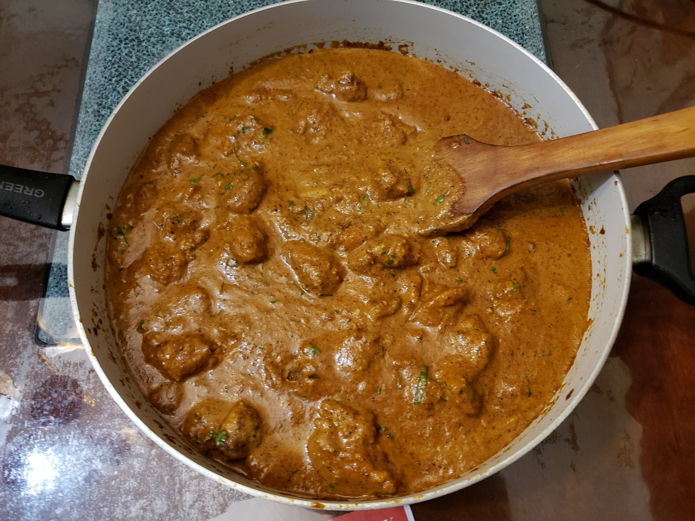

Murgh Makhani (Butter Chicken)

Ingredients:
Marinade:
- 1 3/4 lbs Chicken thighs, boneless and skinless (about five thighs), cut into bite-sized cubes
- 1/2 cup Plain yogurt
- 1 1/2 tbsp Garlic, minced or garlic paste
- 1 tbsp Ginger, minced or ginger paste
- 2 tsp Garam masala
- 1 tsp Turmeric
- 1 tsp Cumin
- 1 tsp Kashmiri chili powder
- 1 tsp Salt
Sauce:
- 2 tbsp Olive oil
- 2 tbsp Ghee + more
- 1 large Onion, sliced
- 1 1/2 tbsp Garlic, minced
- 1 tbsp Ginger, minced
- 1 1/2 tsp Garam masala
- 1 1/2 tsp Cumin
- 1 tsp Ground coriander
- 14.5 oz Crushed tomatoes, or Diced tomatoes
- 1 tsp Kashmiri chili powder
- 1 1/4 tsp salt
- 1 cup Heavy cream
- 1 tbsp Sugar
- 1/2 tsp Kasoori methi (Dried fenugreek leaves)
- Optional: 1 tbsp Cilantro
InstructionsL
- Combine all the marinade ingredients together. Let marinate overnight.
- Heat the olive oil over medium-high heat in a large pan. In small batches, sear the chicken cubes for about 3 minutes on each side, making sure not to overcrowd the pan. Remove the chicken from the pan and reserve for later.
- Heat ghee in the same pan. Fry the onions until they start to sweat, about 6 minutes, while scraping up any browned bits stuck on the bottom of the pan.
- Add garlic and ginger and sauté for 1 minute until fragrant. Then add ground coriander, cumin and garam masala. Let cook for about 20 seconds until fragrant, while stirring occasionally.
- Add crushed tomatoes, chili powder and salt. Let simmer for about 10-15 minutes, stirring occasionally until sauce thickens and becomes a deep brown red colour.
- Remove from heat, scoop mixture into a blender and blend until smooth. You may need to add a couple tablespoons of water to help it blend (up to 1/4 cup). Work in batches depending on the size of your blender.
- Pour the puréed sauce back into the pan. Stir the cream, sugar and crushed kasoori methi (or fenugreek leaves) through the sauce. Add the chicken with juices back into the pan and cook for an additional 8-10 minutes until chicken is cooked through and the sauce is thick and bubbling. If the sauce is too thick, add a couple of tablespoons of ghee to thin out the sauce.
- Remove from heat and stir in the cilantro if using.